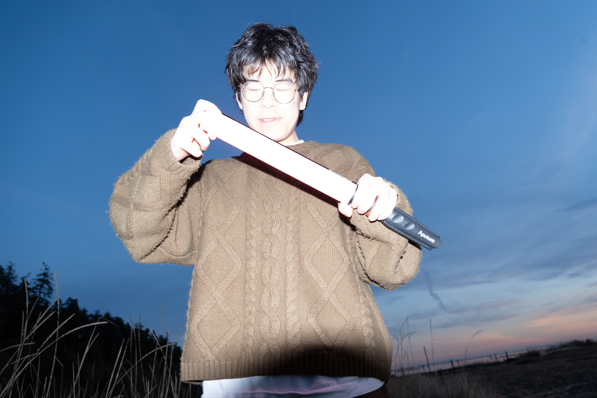

ABOUT ME
Yumin Chang.
Creative Director.
I'm a creative director working at the intersection of filmmaking and content creation. I believe fast-paced content deserves the same intention, visual storytelling, and craftsmanship as cinema.
My approach brings the production techniques of high-end filmmaking into the speed-driven world of digital media, creating work that feels cinematic without the timelines or overhead of traditional productions.
From Y Combinator startups and global hacker house collectives to commercial projects, I've helped bring ambitious ideas to life through content that has amassed over 2.5 million views.